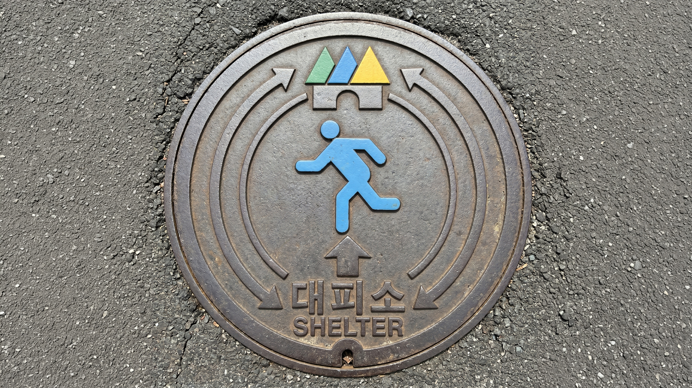
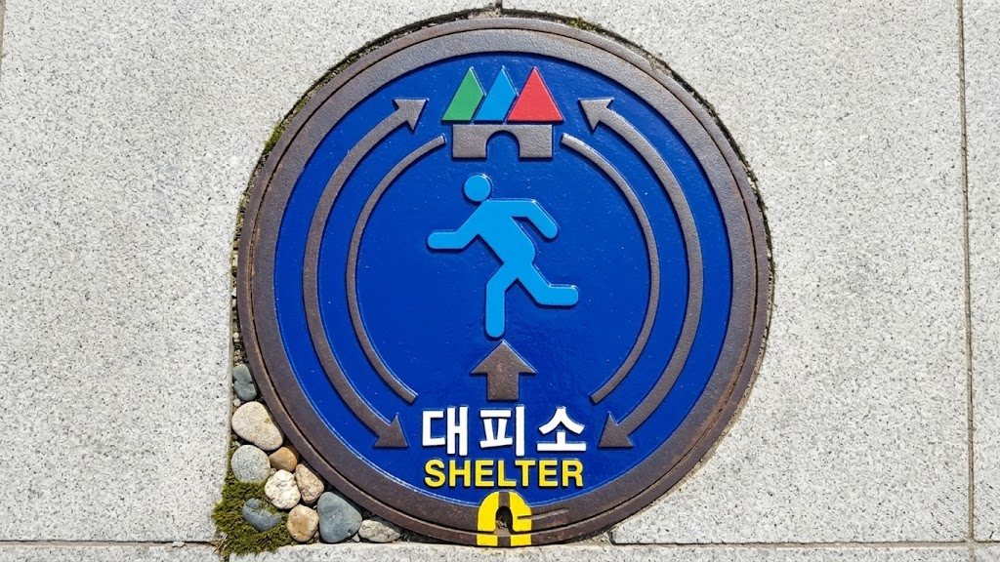

우리는 평소에 맨홀을 밟고 지나가지만, 그것이 우리의 생명을 구할 수 있다고 생각하는 사람은 아무도 없습니다. 디자인의 역할은 이 당연함을 뒤집는 데 있습니다.

평범한 일상 속 맨홀은 단순한 하수도 덮개에 불과합니다. 하지만 재난이라는 극한의 상황에서, 이 흔한 철제 덮개는 도시 전역을 촘촘히 잇는 생명의 '안내망'으로 변모할 잠재력을 가지고 있습니다.
"새로운 것을 세우는 대신,
이미 있는 것의 가치를 다시 봅니다."
맨홀은 도심 내 40~50m 간격으로 촘촘히 깔려있는 유비쿼터스(Ubiquitous) 인프라입니다. 점이 아닌 선으로 이어지는 지속적인 길잡이가 될 수 있습니다.
위급 상황 시 연기를 피하거나 장애물을 살피기 위해 사람의 시선은 자연스럽게 바닥을 향합니다. 지면 디자인은 인간의 생존 본능에 가장 부합하는 인터페이스입니다.
거대한 구조물을 새로 신축할 필요가 없습니다. 기존 맨홀의 교체 주기에 맞춰 뚜껑 디자인만 변경함으로써 막대한 도시 예산을 절감할 수 있습니다.
재난 발생 시 심리적 위축으로 인해 사람의 시선은 평소 수평 시야보다 약 15~30도 아래를 향하게 됩니다. 나아가 평상시 스마트폰 사용 습관으로 인해 현대인의 시선은 이미 바닥을 향하는 것에 더욱 익숙해져 있습니다.
높은 위치의 표지판은 연기나 정전 시 시야에서 완전히 사라집니다. 패닉 상태에서 발생하는 '터널 시야(Tunnel Vision)' 현상은 주변부 정보 인지를 더욱 철저히 차단합니다.
실제 대피 장소 주변과 기존 기물(표지판, 맨홀)에 대한 조사를 통해, 현재의 인프라가 가진 치명적인 UX 결함을 분석했습니다.
목적지(대피소) 근처에 도달해야만 표지판을 볼 수 있습니다. 현재 내 위치에서 어디로 도망쳐야 하는지 알려주는 연속적인 방향 정보(Breadcrumbs)가 절대적으로 부족합니다.
주로 전봇대 상단이나 건물 높은 벽면에 부착되어 있습니다. 화재로 인해 연기가 차오르거나 야간 정전이 발생하면 시야에서 가장 먼저 사라지는 사각지대입니다.
아스팔트와 동일한 무채색의 주철 재질로 도로와 완벽히 동화됩니다. 혼란스러운 재난 상황, 특히 비가 오거나 어두울 때 보행자의 주의를 전혀 끌지 못합니다.
'오수', '우수', '통신' 등 시설 관리자만을 위한 텍스트만 각인되어 있습니다. 수많은 시민이 밟고 지나가지만 정작 아무 의미도 전달하지 못하는 '죽은 인프라'입니다.
정량적 데이터가 제시하는 명확한 방향성.
시각 탐색 시간 향상
(고대비 컬러 적용)
정보 인지 거리
(반사도료 적용)
의사결정 시간 단축
(단순 심볼 인지)
고립 공포감 감소
(지면 안내의 심리적 효과)
행동 유도성 (Affordance) 지면은 인간이 가장 안정감을 느끼는 지지체입니다. 발밑의 정보를 따라가는 행위는 본능적이며 강력한 행동 유도를 일으킵니다.
Luminous Escape Path 소방청 화재안전기준상 피난유도선은 지면 1m 이하가 가장 효율적입니다. 맨홀은 연기층 아래 최적의 위치입니다.
도시의 죽은 공간을 생명을 살리는 인터페이스로 바꿉니다. 직관적이고, 명확하며, 포용적입니다.
Safety Orange / Neon Yellow 적용 및 축광/반사 도료를 사용하여 정전 시에도 스스로 빛을 냅니다.
ISO 7010 표준 '대피소' 픽토그램과 영문 병기로 언어의 장벽 없이 누구나 즉시 이해할 수 있습니다.
맨홀 중앙의 대형 화살표가 대피소 방향을 실시간 나침반처럼 정확히 지시합니다.
방향을 지시하는 기물의 가장 큰 리스크는 '오정렬'입니다. 하수도 유지보수 작업 후 맨홀 뚜껑이 잘못 닫히는 휴먼 에러를 구조적, 시스템적으로 방지합니다.

맨홀 프레임과 뚜껑에 특정 각도에서만 맞물리는 '비대칭 홈(Notch)'을 설계하여, 오직 정확한 방향으로만 뚜껑이 완전히 닫히는 물리적 락(Lock)을 적용합니다.
도로에 고정된 외부 프레임과 회전하는 뚜껑 가장자리에 고대비 색상의 '정렬선(Alignment Line)'을 그어, 작업자가 눈으로 영점(Zero-point)을 즉시 맞출 수 있게 합니다.